PESSOA
INFECTADA
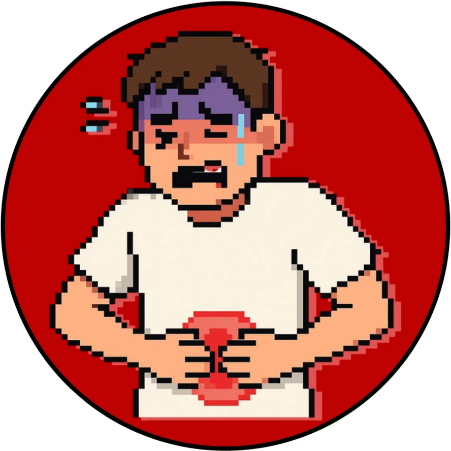

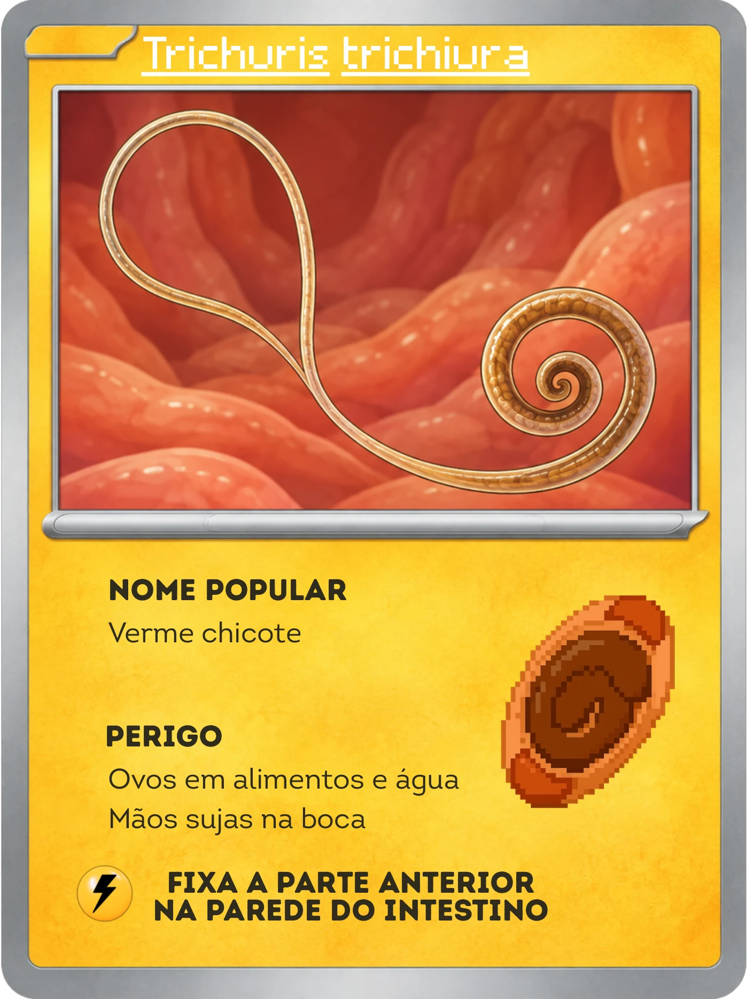

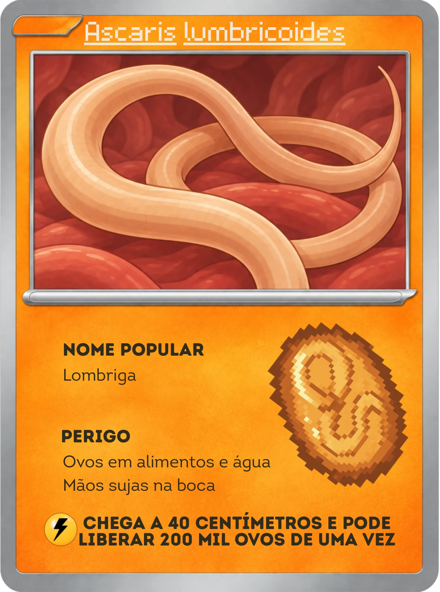

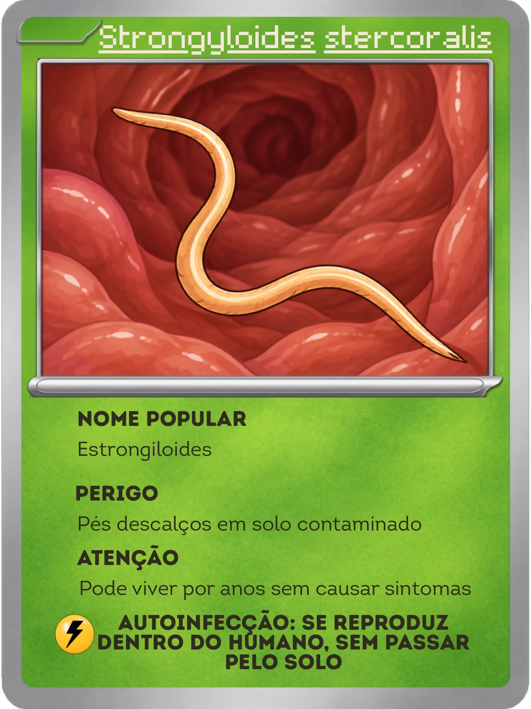

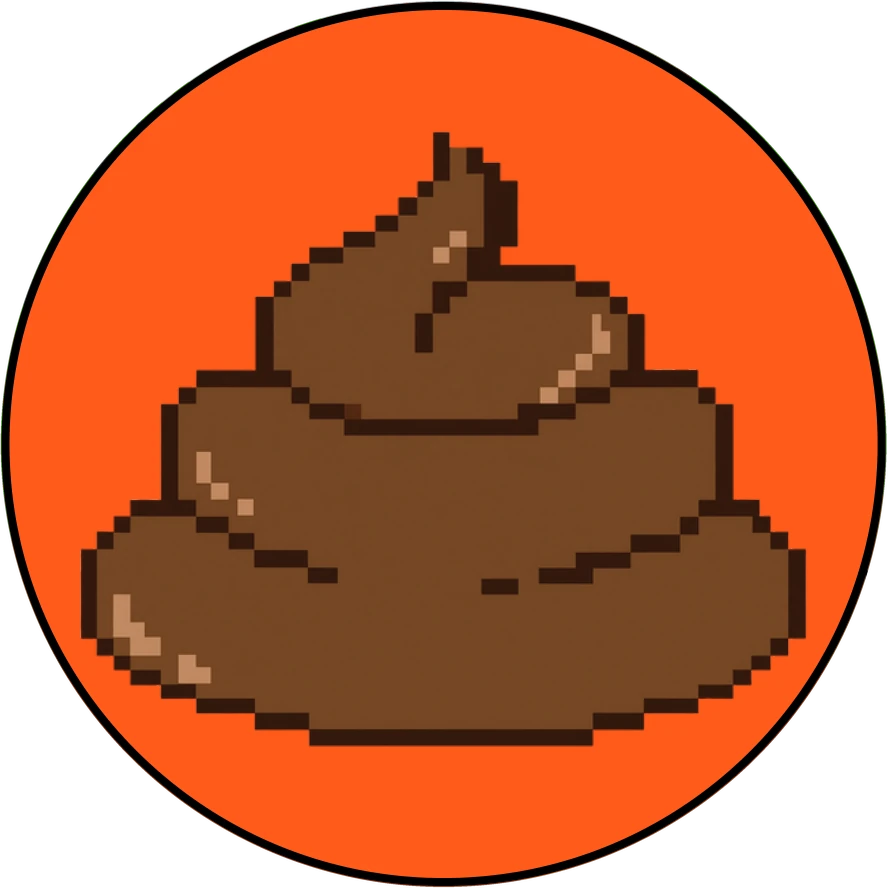
Eliminadas
por uma
pessoa
infectada,
pode conter
ovos ou
larvas de
parasitas
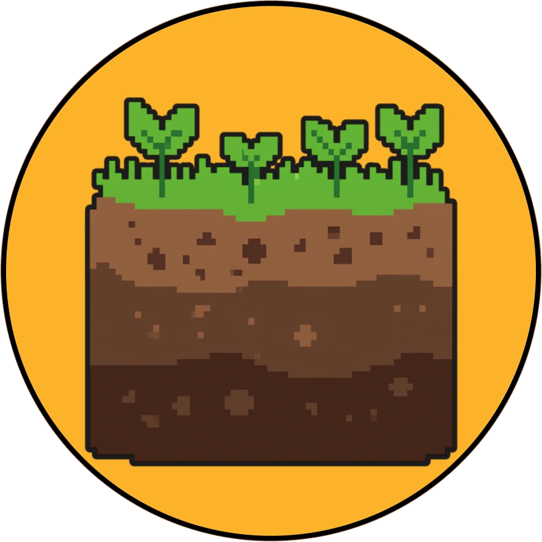
Local por onde os
parasitas precisam
passar para
completar seu
desenvolvimento
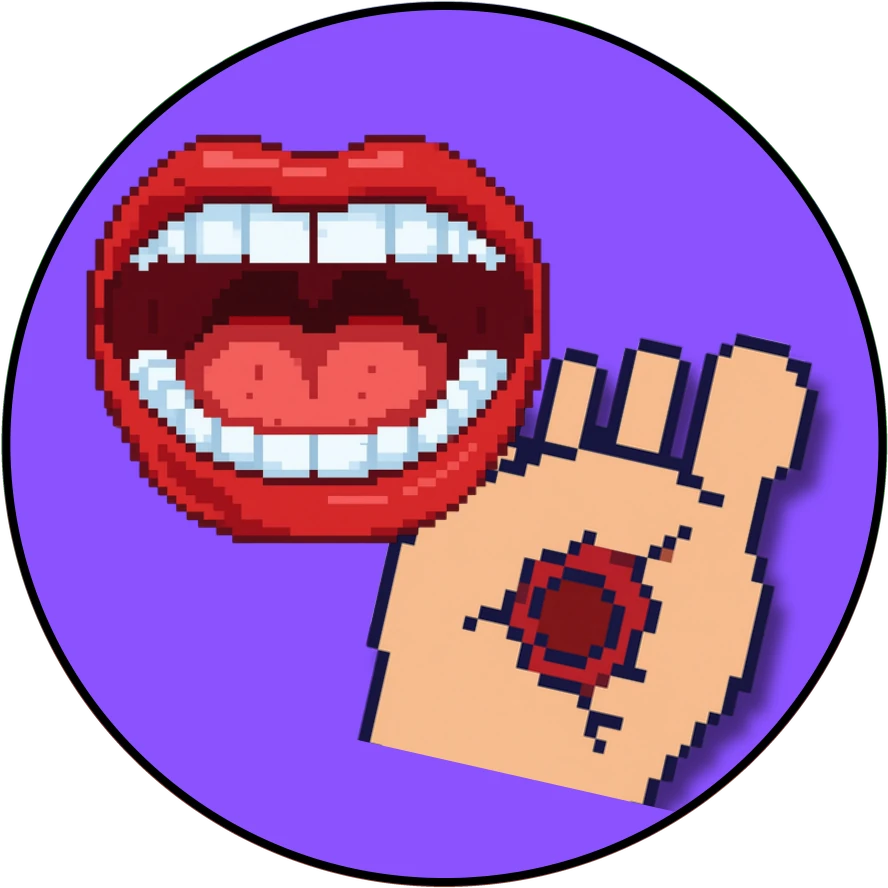
Ingestão
de ovos ou
pele sendo
penetrada
por larvas
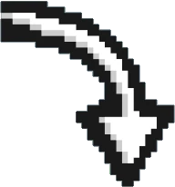
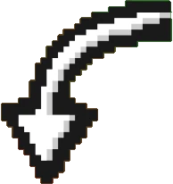
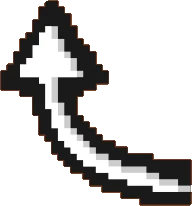
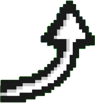


OS INVESTIGADORES DESCOBREM QUE ELE PASSAVA TODAS AS TARDES BRINCANDO EM UM PARQUE MUITO FREQUENTADO PELAS CRIANÇAS DA COMUNIDADE.
AO CHEGAR AO LOCAL, SUA EQUIPE OBSERVA QUE O PARQUE POSSUI UM GRANDE ESPAÇO DE TERRA, ONDE HÁ ESCORREGADORES, BALANÇOS.
MUITAS CRIANÇAS SÃO VISTAS EM PIQUENIQUES APÓS BRINCAREM.
QUAL PARASITO É ADQUIRIDO PRINCIPALMENTE PELA INGESTÃO DE OVOS PRESENTES NO AMBIENTE CONTAMINADO?

O PACIENTE APRESENTAVA TOSSE E PARA DESCARTAR PNEUMONIA É SOLICITADO UM RAIO-X. NA IMAGEM SE OBSERVA PEQUENAS MANCHAS NO PULMÃO.
PARA OBSERVAR O INCHAÇO ABDOMINAL, É REALIZADO UMA TOMOGRAFIA, IDENTIFICANDO UMA MASSIVA QUANTIDADE DE VERMES OBSTRUINDO O INTESTINO DELGADO.
O PACIENTE É ENCAMINHADO PARA A SALA DE CIRURGIA.
QUAL PARASITO PODE MIGRAR PELOS PULMÕES ANTES DE SE ESTABELECER NO INTESTINO?

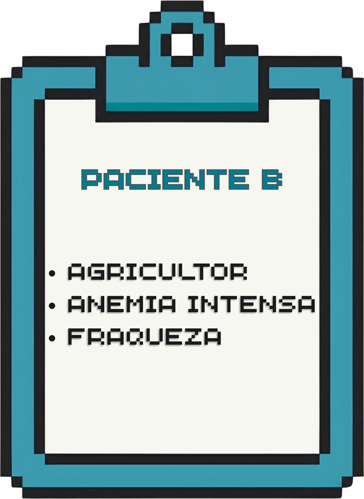


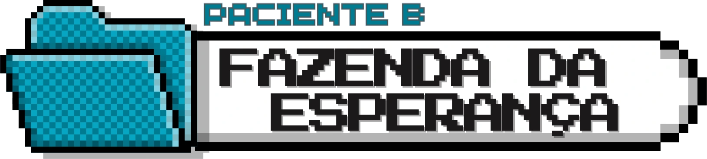
VOCÊ E SUA EQUIPE VISITAM A FAZENDA EM QUE O HOMEM TRABALHA. OBERSERVAM TRABALHADORES DESCALÇOS OU ENTÃO DE CHINELOS E O SOLO ÚMIDO.
O PACIENTE RELATA: “TUDO COMEÇOU DEPOIS DE UMA COCEIRA MUITO FORTE NO MEIO DOS DEDOS DO MEU PÉ”.
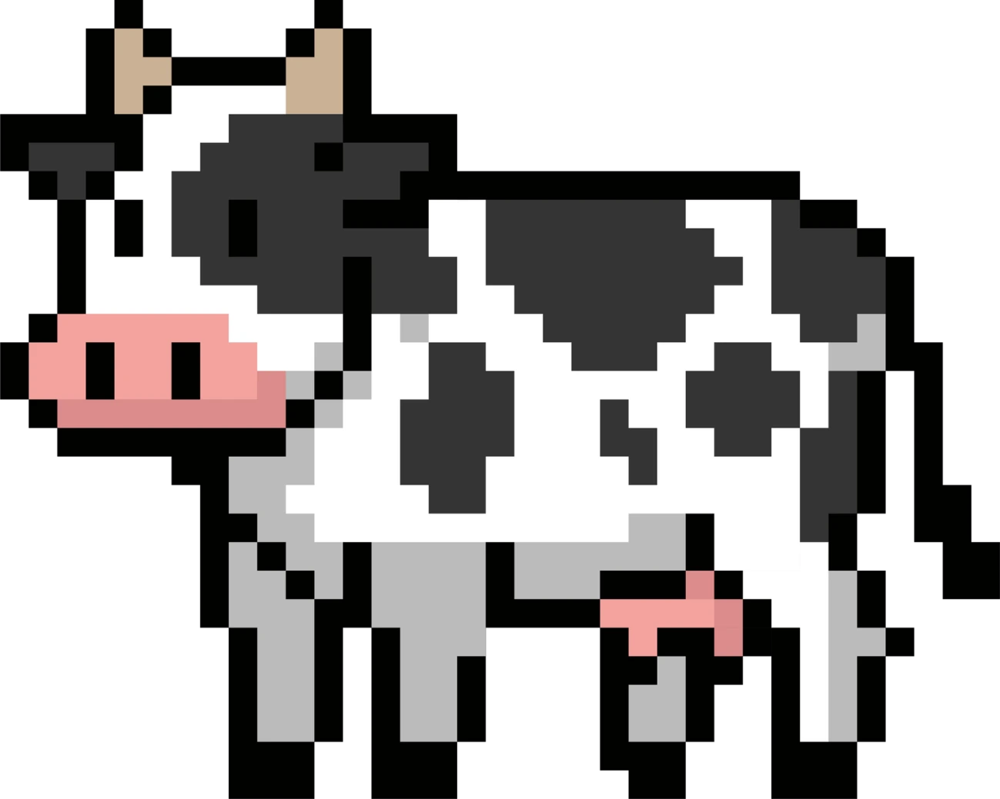
QUAL PARASITO PODE PENETRAR ATIVAMENTE A PELE?

O SANGUE DO PACIENTE FOI ENCAMINHADO PARA UM EXAME NO LABORATÓRIO. AO SER ANALISADO, DEU-SE O DIAGNÓSTICO DE ANEMIA INTENSA E FALTA DE FERRO NO ORGANISMO.
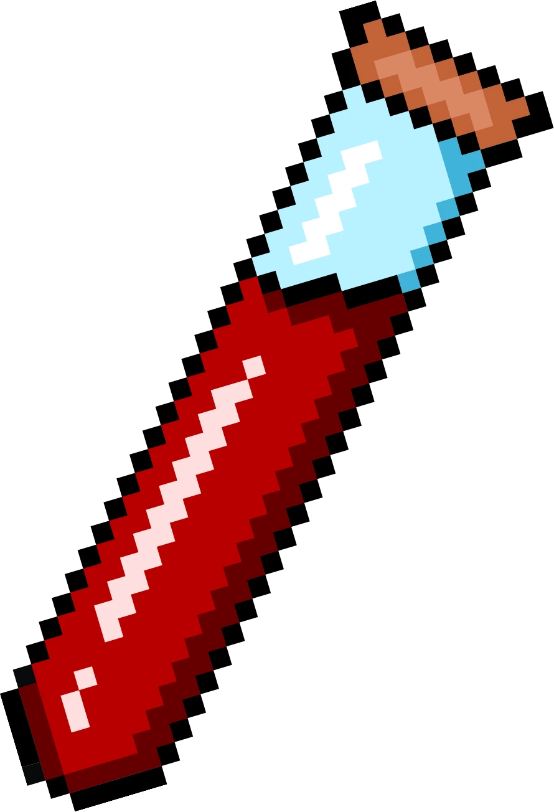
POR QUE VERMINOSES PODEM CAUSAR ANEMIA?

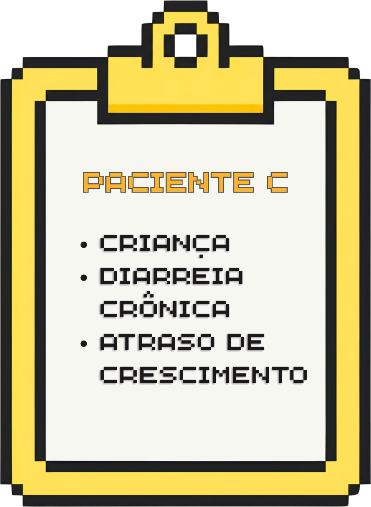


ESSA CRIANÇA TAMBÉM BRINCAVA NO MESMO PARQUE, OS INVESTIGADORES ANALISARAM UMA AMOSTRA DE FEZES DO PACIENTE.
AO CHEGAR AO LABORATÓRIO, A BIOMÉDICA RESPONSÁVEL DIZ:
"CONSEGUIMOS IDENTIFICAR ESTRUTURAS COMPATÍVEIS COM OVOS DE HELMINTOS, MAS PRECISAMOS DA AJUDA DE VOCÊS PARA CONFIRMAR QUAL ESPÉCIE ESTÁ INFECTANDO O PACIENTE."
CONSEGUIMOS OBSERVAR OS VERMES E SEUS OVOS A OLHO NU?

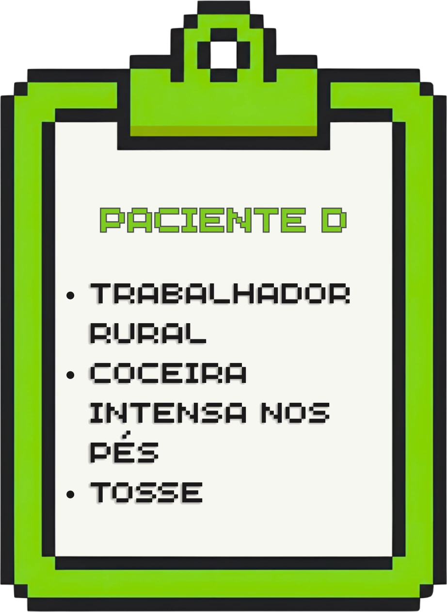